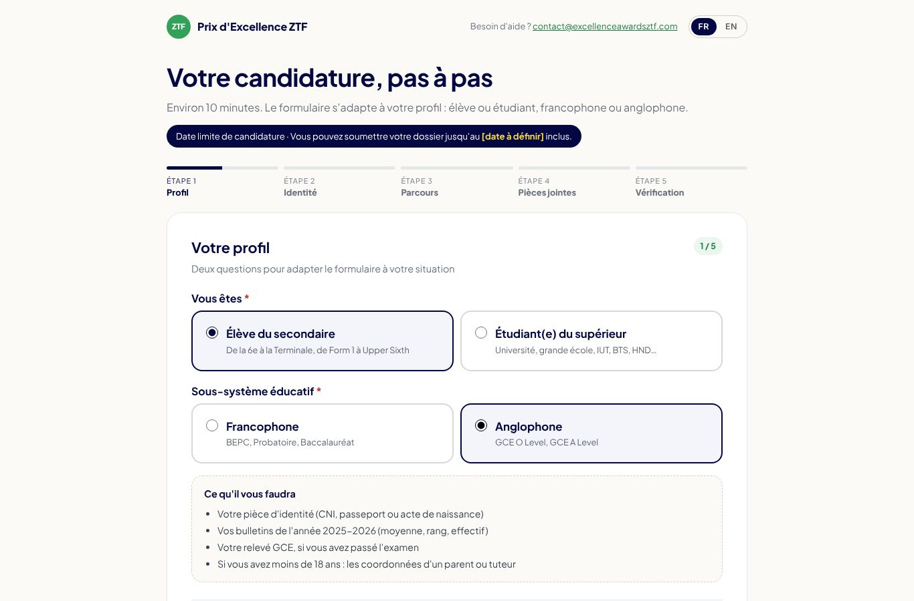
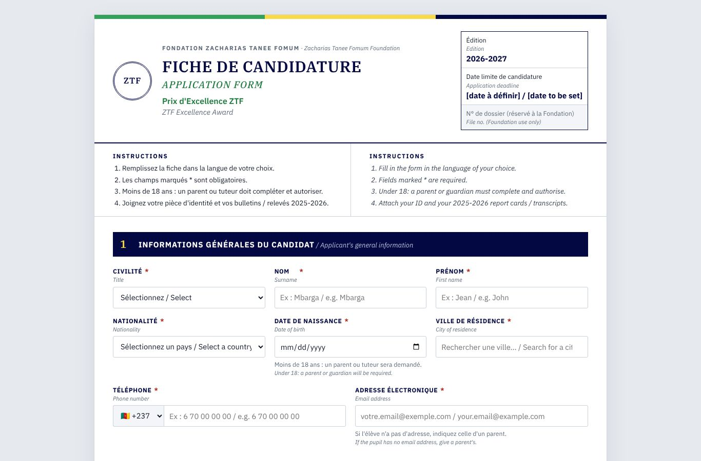

Ce qui a changé depuis la version 1
- Listes camerounaises : 10 catégories d'établissements (secondaire général, secondaire technique, universités d'État, grandes écoles, IUT, études de santé, universités privées, IPES, écoles professionnelles, autres) à la place des listes françaises.
- Secondaire et supérieur : pour un élève, « Niveau » devient « Classe » (6e → Terminale ou Form 1 → Upper Sixth), « Domaine d'études » devient « Série / filière », et le classement porte sur la classe.
- Sous-système francophone / anglophone : un élève anglophone indique en plus son dernier examen GCE et ses grades.
- Mineurs : âge minimum abaissé à 9 ans ; sous 18 ans, un bloc « Parent ou tuteur légal » apparaît (lien, nom, téléphone, e-mail facultatif, autorisation).
- Bilingue : bouton FR / EN sur toutes les maquettes ; la maquette 3 affiche les deux langues en même temps.

1. Institutionnelle classique
Bandeau vert aux couleurs du site ZTF, une seule page avec les 3 sections numérotées et le bouton FR / EN dans l'en-tête. La plus proche de la référence, la plus simple à intégrer.

2. Parcours guidé
On commence par le profil (élève ou étudiant, francophone ou anglophone) : le formulaire filtre ensuite les établissements et annonce les pièces à préparer. 5 étapes, récapitulatif avec « Modifier » avant l'envoi.

3. Bilingue officiel
Une fiche de candidature au format administratif, avec chaque libellé en français et en anglais côte à côte, comme les documents officiels camerounais. Pas de bouton de langue : tout le monde lit la même fiche.

4. Mobile d'abord
Pour les élèves qui candidatent depuis un téléphone : rubriques repliables, grands champs tactiles, barre d'envoi fixe, aucune police à télécharger (page légère pour les connexions lentes).

5. Prestige « cérémonie »
Bleu nuit et or, typographie à empattements, sommaire latéral en chiffres romains, chiffres clés du prix et anneau de progression : l'esprit de la cérémonie de remise des prix.
À savoir pour tester
- En bas à gauche, « Maquette · pré-remplir » propose deux dossiers fictifs : un élève anglophone mineur (fait apparaître le bloc tuteur et les résultats GCE) et une étudiante francophone.
- Essayez une date de naissance de moins de 18 ans, puis une catégorie du secondaire avec le sous-système anglophone : les blocs correspondants apparaissent.
- L'envoi est simulé : aucune donnée ne quitte le navigateur. Le captcha (Cloudflare Turnstile dans la référence) est représenté par un emplacement.
- La date limite est affichée « [date à définir] » : elle se règle à un seul endroit (
shared/form-data.js).